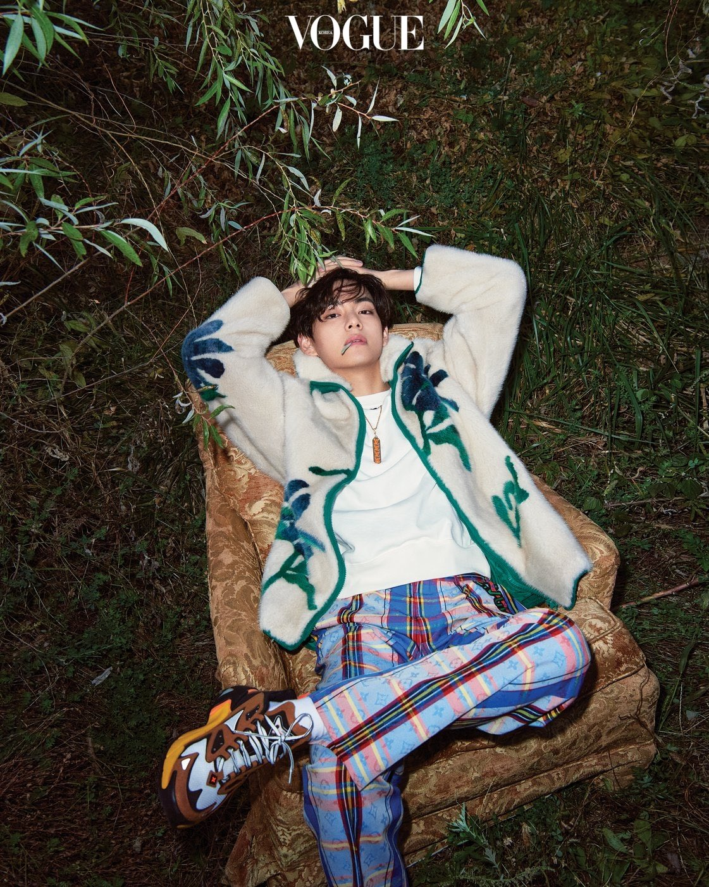

Entrevistas
Taehyung para Vogue Korea
V: Fuerte sin estar descontento ni combativo.
«Puede que haya muchos baches en el camino por delante y puede que sienta dolor en algún momento, pero no tengo miedo».
Cuán felizmente ignorantes somos aquellos de nosotros que damos por sentada nuestra juventud. Nuestra juventud puede ir y venir desapercibida en la confusión de este período fugaz. Solo años después nos damos cuenta de que alguna vez fuimos jóvenes. De hecho, es porque la juventud es pura e inocente por lo que se da por sentado.
Cuando se le pregunta si se siente agobiado por el amor y la atención de los fanáticos y la importancia que le dan a cada pequeña cosa que hace, V niega con la cabeza como si realmente no pudiera entenderlo.
«Realmente no sé qué significa BTS parala gente. Agradezco todos los cumplidos y las respuestas positivas, pero no tengo ni idea de por qué recibimos tanto cariño»,admite. V, quien ha recibido una impresionante serie de elogios como miembro de BTS, incluído ser el primer artista asiático en ser nombrado Artista del Año en los American Music Awards y ser declarado el hombre más guapo del mundo, parece estar saboreando estos posiblemente fugaces momentos de su juventud.
Sin embargo, o parece saber por qué le ha llegado este deslumbrante éxito. Esto es a pesar del hecho de que la gente está continuamente explicando las muchas razones.
En una sesión de fotos, es el sujeto quien crea el ambiente. He estado en numerosas sesiones de fotos, pero nunca había visto un set tan tranquilo y silencioso como el de Vogue hoy.
El sonido incesante de los obturadores de las cámaras parece más ruidoso de lo habitual y solo está interrumpido por débiles sonidos de risa de vez en cuando.
En el centro de todo está V. Él establece suavemente el tono desde el principio. Con su amabilidad y sociablidad en plena exhibición, parece merecer su apodo de Kim Instant Friend (amigo al instante, mariposa social).
«La primera letra de mi tipo de personalidad MBTI solía ser E (extrovertido), pero recientemente cambió a I (introvertido). ¿No dicen que la diferencia entre los dos es enorme?», dice V. En los últimos años, el cuestionario Myers-Briggs Type Indicator (MBTI) se ha vuelto popular entre los jóvenes surcoreanos, que comparten sus tipos de MBTI con tanta naturalidad como intercambian sus nombres, ansiosos por analizar rápidamente la personalidad de los demás.
Pero V parece indiferente ante su aparente cambio de personalidad, indiferente sobre si se le clasifica como extrovertido o introvertido. Explica que esto se debe a que recientemente ha experimentado algunos dolores al crecer. «No creo que estos cambios sean algo malo porque he aprendido a decidir qué es lo correcto para mi qué no», explica V. «Pude crecer con la ayuda de la gente que me rodeaba. Puede que haya muchos baches en el camino por delante y puede que sienta dolor en algún momento, pero no tengo miedo. Cómo procedo en esas situaciones es lo más importante».
La respuesta ejemplar de V refleja la cosmovisión que BTS ha establecido a lo largo de los años. Este extraordinario período de crecimiento, sin un final a la vista, fue creado por siete niños comunes. V continúa creciendo con BTS, y parece que no hay límite para lo más fuerte y resistente que puede llegar a ser. La fuerza impulsora detrás de este crecimiento es simplemente la búsqueda de un sentido de logro. «Cuando algo me carcome, me concentro en ello y trato de conquistarlo. Por ejemplo, si me abruma alguna emoción, escribo una canción al respecto. Cuando la canción está terminada, ya sea una buena canción o no, la sensación de logro ayuda a deshacerme de cualquier dolor o sufrimiento por el que estoy pasando».
V continúa lanzando sus propias canciones. Desde que lanzó su primera canción «4 O'Clock» (una colaboración con RM), V ha lanzado «Scenery», «Winter Bear», «Sweet Night» y otras. Actualmente, 15 de sus canciones están registradas en la Asociacion de Derechos de Autor de Música de Corea.
Es admirado por sus letras poéticas y su destacada sensibilidad musical, el resultado de concentrarse en momentos cotidianos y emociones sutiles. «Intento inspirarme en la vida cotidiana», reflexiona V.
«Creo que mi vida diaria ya es especial, por no hablar de hacer viajes o vivir eventos especiales. En estos días, me inspiro mucho en el trabajo de otros. Ayer vi Forrest Gump por primera vez en mucho tiempo y me hizo llorar un poco. Al final de la película, Forrest dice: 'No se si cada uno de nosotros tiene un destino, o si todos estamos flotando accidentalmente, como en una brisa', y realmente lo sentí por él. Eso era triste».
Forrest Gump, que fue lanzada un año antes de que naciera V, describe la vida de Forrest, quien nace con una inteligencia subnormal y una columna vertebral curva. Es la historia de un hombre cuyo altruísmo raya en la necedad y cuya honestidad raya en la estupidez. Aunque Forrest nace con discapacidad, un talento descubierto por casualidad le aporta riqueza y fama. También se reduce al trabajo duro y la buena suerte, un destino ordenado por el cielo.
V insiste en que su éxito y logros como parte de BTS se reducen a suerte. «Sí, creo en el destino, pero si pudiera dar marcha atrás en el tiempo, ¿podría volver a ser cantante?«, reflexiona. «No estaría garantizado. Así que creo que todo se debe a la suerte de los dioses».
Nacido en 1995, Kim Taehyung (nombre de nacimiento de V), tuvo un golpe de suerte cuando conoció a los miembros de lo que se convertiría en BTS. El siguiente punto de inflexión fue cuando debutaron juntos después de un largo período de entrenamiento. «Formamos una relación sólida porque comenzamos con una agencia pequeña», dice V.
«Mi forma de pensar también era muy diferente. A partir de ese momento, pensé en mi grupo como una nueva familia». También ganó ARMY, aliados incondicionales que le enviaron amor y apoyo incondicional. Cuando la pandemia de Covid-19 detuvo las actuaciones fuera de línea, BTS comenzó a reunirse con los fanáticos con más frecuencia a través de su propia plataforma, Weverse. Comparten aspectos de su vida diaria a través de dicha plataforma, y a V no le gusta llamar a esto «comunicación», porque de alguna manera se siente demasiado profesional. «Quiero ser amigo cercano de ARMY, y hablo con ellos en Weverse cada vez que tengo un problema o algo que quiero compartir», explica. «Así es como quiero interactuar todo el tiempo: no me gusta un enfoque empresarial para nada. Hago fotos porque me gusta, hago las cosas porque me gustan y me acerco a la gente porque me gusta. Acepto que a veces necesitas una mentalidad empresarial, pero no soy muy bueno en eso. Esa es mi debilidad».
Clichés como «prevalece la sinceridad» y «quien ha sido amado sabe cómo dar amor» no son solo palabras para V. Es bien sabido que una vez compró una obra de arte de un artista desconocido en una galería por la que paseó durante una de las giras de BTS por el extranjero, y tocó el corazón del artista al tomar su mano y decir: «Que tus días brillen intensamente». Mantiene esta actitud por una sencilla razón: «porque soy amado por muchos, quiero compartir ese amor«.
Entonces, ¿a qué palabras se aferra V cuando atraviesa un momento difícil? «Mucha gente ya lo sabe, pero lo que mi padre solía decir es '¡No es gran cosa!' Y eso todavía me da fuerzas hasta el día de hoy», relata. «Además, mis compañeros de grupo me dicen que puedo apoyarme en ellos y hablar con ellos cuando lo estoy pasando mal. Cuando estoy luchando, me consuelan como Kim Taehyung, no como V».
Cuando menciono que la canción que mejor destaca el encanto de V como vocalista es la interpretación de «My Universe» en los American Music Awards el 22 de noviembre junto a Coldplay, sonríe como si estuviera de acuerdo. Un video detrás de escena de BTS y Coldplay grabando esta canción fue ampliamente compartido. En una escena, Chris Martin elogia a BTS por sus voces fuera de la cabina de grabación. Más obviamente que cualquier metraje de actuaciones escénicas brillantes, esta escena muestra que BTS se ha convertido en «estrellas de las estrellas». «En ese video no se ve, pero cuando salió la guía vocal de la canción en inglés, la grabé de principio a fin. Los miembros de Coldplay me escucharon y me felicitaron, diciendo que era como el segundo Chris Martin. ¡He escuchado mucho esa grabación desde entonces!», cuenta V entre risas.
Para V, BTS es la fuente de luz. «Desde que estaba en la escuela primaria soñaba con ser cantante, pero nadie me tomaba en serio. Todo el mundo decía: 'Se realista'. BTS hizo realidad mi sueño», dice.
Le pregunto si se siente abrumado por etiquetas tan elevadas como «el primero» o «el mejor», y si se arrepiente de algo. «Algundos dicen que debes mantener tu primer amor como un pasatiempo y no convertirlo en tu trabajo. Pero no estoy de acuerdo, porque hago lo que amo profesionalmente», reflexiona V.
«Cuando siento que no es lo suficientemente bueno, puedo dedicar más tiempo a la práctica y esto me ayuda a desarrollarme y mejorar. Además, el hecho de que a la gente parezca gustarle lo que hago, lo hace muy satisfactorio y significativo para mi».
V ve el mundo sin descontento; y Kim Taehyung, V y BTS han demostraro que está bien hacerlo, desde su debut hasta el día de hoy.